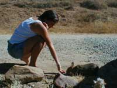
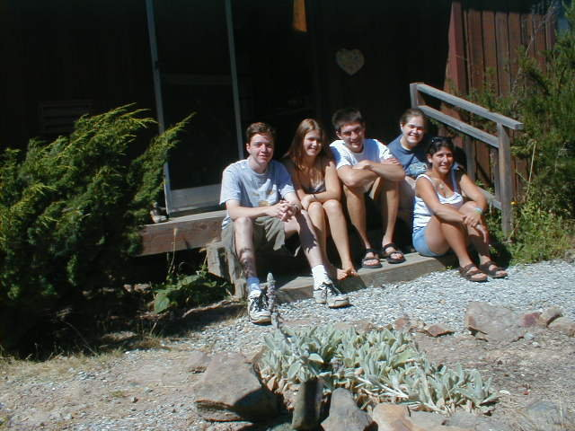

|
|
Day 11 [7/31/99]
From: Los Angeles, CA
To: Mt. Madonna, CA
Total Miles: 380
Sites Seen: The 5, Mount Madonna, Santa Cruz
Today's Entry By: Rachel Caplan |
 |
| SORRY
- There will be a lack of pictures for today since we forgot to bring the camera to
Santa Cruz. |
|
|
|
Today we got back on the road again. This is the first time
dared to travel without the help of our brown "historic Route 66" signs, old
telephone poles, or our extremely "helpful" guide book. It was quite frightening
leaving Encino this morning, and upsetting, but we didn’t get too far before we lost
ourselves in the middle of Gilroy, CA on our way to Parvati Fisher’s and
automatically felt at home. Fortunately, we have become expert navigators (or so we like
to believe) and we quickly got out of the mess and continued on to Mt. Madonna. To
actually arrive there we had to climb up a big hill (or a mountain as they like to call
them out here in the west). Even though at the beginning we did see a sign depicting a
truck virtually perpendicular to the ground warning us this road was nothing compared to
the one Parv later drove us down. |
|
Questions: Who is this crazy Parvati I speak of? Answer:
not Jesus Christ our Lord but Baker’s girlfriend. Parvati Fisher commonly known as
Parv is Baker’s girlfriend from Amherst. She lives at the Mt. Madonna Center Commune
in Watsonville, CA. (Watsonville is just minutes away from Santa Cruz). The commune is 360
acres. There are between 75 and 100 residents (it fluctuates) and will increase it’s
population greatly next week when 500 Quakers arrive. |
 |
| Proof that we have met and know the whereabouts of one Jay
Raskin. |
|
|
|
 |
| A vicious bunny comes out of nowhere and attacks an innocent
blueberry in Rachel's hand. Poor thing. |
|
|
So we arrived at the commune around 3:30 and met Parv at the
entrance. She brought us to the cabin we would be staying in. She showed us our rooms and
we settled. Shortly after we received a tour from the experienced campus tour guide Parv,
who unfortunately did not walk backwards for us. We went to the C.B., which might stand
for Center Building, or it should, that’s what it means more or less though. Inside
we met the Kitchen Ladies, who work in the kitchen. Word has it that they’re the
people you need to get in good with because they’re the ones who’ll give you all
the good gossip and let you eat out of the fridge. |
|
After our tour we returned to our cabin. There we were
greeted by Devaki, Parv’s mom. She visited with us for a while. Once she left we left
too. We headed down the crazy, twisty, turny road that I spoke of earlier. We went into
Santa Cruz. There we ate dinner at Pleasure Point Pizza. I enjoyed my food but was
disappointed because they did not have the Spicy Plum Chicken. The lady told me that I
could have the BBQ chicken. When I asked , the obnoxious man next to me shouted
"chicken". I would have slugged him but he weighed about four times my weight so
I decided against it. Instead I ate something else that had artichokes. It was pretty
good. Afterwards we went to down town Sata Cruz for dessert and to walk around some. We
all, shockingly, were tired and so we called it an early night and headed home. Yeah, I
guess our days are becoming shorter and shorter. We seem to be going to sleep earlier and
earlier. We have less energy and are lacking "sex and violence" says a fan.
We’re just kids. Don’t expect much, and love what you get. Till next
time…… Love, Rachel |
 |
| The van took this picture so we are not responsible for who may
be in the photo. |
|
|
|